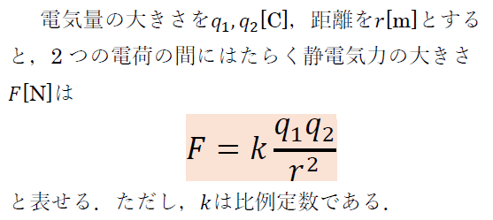
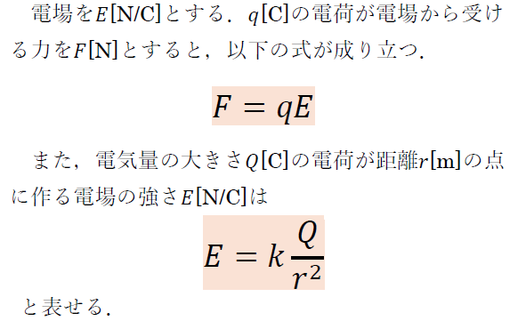
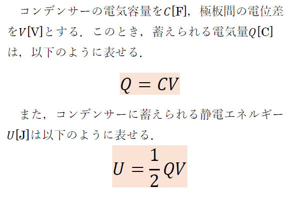
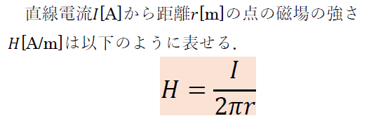
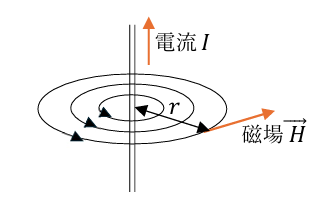
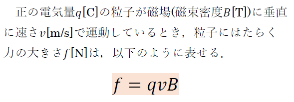
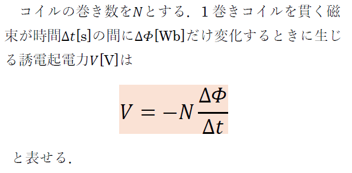

電磁気
クーロンの法則
クーロンの法則とは，2つの電荷の間にはたらく静電気力を求める際に便利な法則である．
中学のときに，2つの電荷が同符号ならば離れあう力，異符号ならば引き付けあう力が発生すると学習した．クーロンの法則にも同様に考えることができ，静電気力を求めるだけでなく，力の向きも考えることができる．
クーロンの法則について公式を以下に示す．

電場
電場とは，ある場所に1[C]の正電荷を置いた際，受ける静電気力のことを指す．
先ほどクーロンの法則を紹介した．電場の定義から，クーロンの法則の公式の片方の電気量を1にしたものと電場の大きさの公式が同じになることが分かる．
電場について，それぞれの公式を以下に示す．先述した通り，クーロンの法則の公式と比較して眺めると良いだろう．

コンデンサー
コンデンサーとは，電子部品の1つである．中学で回路を学ぶ際に学習した抵抗と同じ類のものである．
コンデンサーは基本的に2枚の金属板が向かい合う構造を取っており，それぞれに正・負電荷を与えると，電荷を蓄えることができる．また，放電もすることができるため，高校物理の電磁気では必ずと言っていいほど登場する重要なものである．
コンデンサーについて蓄えられる電気量と，静電エネルギーについて公式を以下に示す．

磁場
磁場とは，電流が作り出す場として定義されている．
磁場に近い言葉として電場があるが，両者は性質が似ておりかなり混乱する分野である．イメージとしては，電荷が登場したときには電場，N極やS極といった磁石が登場した場合は磁場と考えてもらうのが良いだろう．
高校物理では電流が作り出す磁場として，直線電流が作る磁場が出ることが実感では多い．他にも円形電流やソレノイド電流が作る磁場などたくさんあるため，そこは省略する．
直線電流が作る磁場の強さについて，公式を以下に示す．理解が進むように図も掲載する．
 
ローレンツ力
ローレンツ力とは，電荷が磁場に垂直に運動しているとき，電荷にはたらく力のことである．
重要な性質として，一様な磁場内に電荷を垂直に入射させた場合，ローレンツ力が向心力となり電荷は円運動をする特徴がある．これは力学と電磁気の定番な融合問題なので押さえておくと良いだろう．
ローレンツ力の大きさの公式を以下に示す．

電磁誘導
電磁誘導とは，コイル内の磁束が変化するとコイル内に電流が流れる現象のことである．この電流のことを誘導電流とも言う．
電磁誘導についてもう少し詳しく説明すると，コイル内の磁束が変化するとき，コイルに誘導起電力(電位差)が生じることにより電流が流れるという仕組みになっている．
高校物理では，誘導起電力を求める式として，ファラデーの電磁誘導の法則がよく使われる．
ファラデーの電磁誘導の法則の公式を以下に示す．公式を見ると誘導起電力が負の値を取っていると思われがちだが，実際には値が負というわけではなく，向きが反対ということを示している．向きについての詳細はレンツの法則を調べていただきたい．
